import cv2
import matplotlib.pyplot as plt
import numpy as np
# Display original
I = cv2.imread('img/lena512.bmp')
plt.imshow(I)<matplotlib.image.AxesImage at 0x7fd84d3e1280>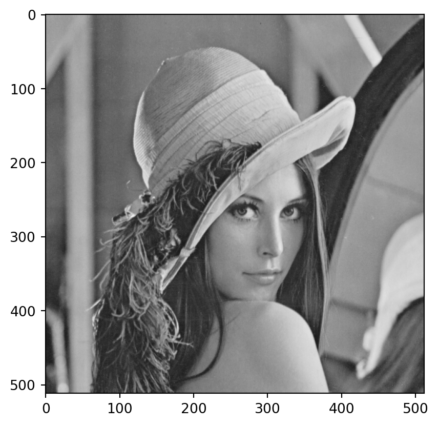
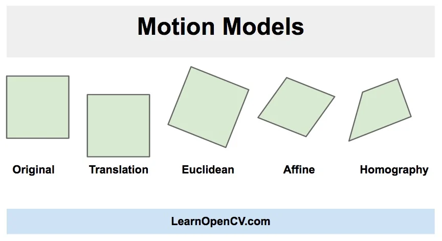
We’ll cover:
A geometrical transformation = a function \(T(\dot)\) which transforms a pixel’s original location \(\begin{bmatrix} x \\ y \end{bmatrix}\) into the destination location \(\begin{bmatrix} x' \\ y' \end{bmatrix}\)
\[\begin{bmatrix} x' \\ y' \end{bmatrix} =T\left( \begin{bmatrix} x \\ y \end{bmatrix} \right)\]
What stays unchanged?
Rotation:
Affine (skew):
Perspective:
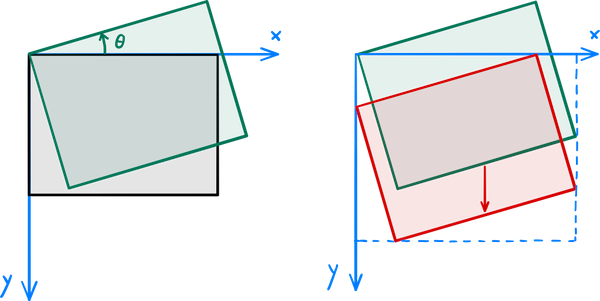
Equation:
\[\begin{bmatrix} x' \\ y' \end{bmatrix} = \begin{bmatrix} \cos{\alpha} & -\sin{\alpha} \\ \sin{\alpha} & \cos{\alpha} \\ \end{bmatrix} \begin{bmatrix} x \\ y \end{bmatrix} + \begin{bmatrix} t_1 \\ t_2 \end{bmatrix} \]
This includes a translation with \(\begin{bmatrix} t_1 \\ t_2 \end{bmatrix}\).
Alternatively, we can drop \(\begin{bmatrix} t_1 \\ t_2 \end{bmatrix}\), and we can pick the origin \(\begin{bmatrix} 0 \\ 0 \end{bmatrix}\) where we want
\[\begin{bmatrix} x' \\ y' \\ 1\end{bmatrix} = \begin{bmatrix} \cos{\alpha} & -\sin{\alpha} & t_1\\ \sin{\alpha} & \cos{\alpha} & t_2\\ 0 & 0 & 1\\ \end{bmatrix} \begin{bmatrix} x \\ y \\ 1\end{bmatrix} \]
import cv2
import matplotlib.pyplot as plt
import numpy as np
# Display original
I = cv2.imread('img/lena512.bmp')
plt.imshow(I)<matplotlib.image.AxesImage at 0x7fd84d3e1280>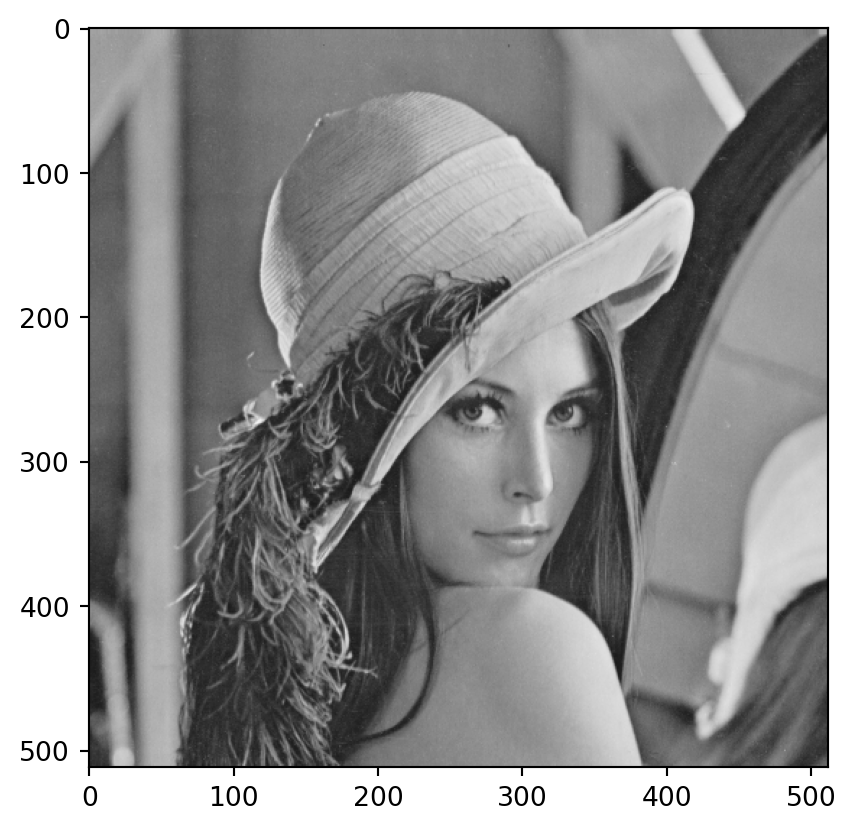
# Rotate with OpenCV
angle = 25
#fixed_point = tuple(np.array(I.shape[1::-1]) / 2)
#fixed_point = tuple([50, 50])
fixed_point = tuple([0, 0])
rot_mat = cv2.getRotationMatrix2D(fixed_point, angle, 1.0)
Irot = cv2.warpAffine(I, rot_mat, I.shape[1::-1], flags=cv2.INTER_LINEAR)
print(f"Rotating around point {fixed_point}")
print(f"Rotation matrix is {rot_mat}")
plt.imshow(Irot)Rotating around point (0, 0)
Rotation matrix is [[ 0.90630779 0.42261826 0. ]
[-0.42261826 0.90630779 0. ]]<matplotlib.image.AxesImage at 0x7fd84988b280>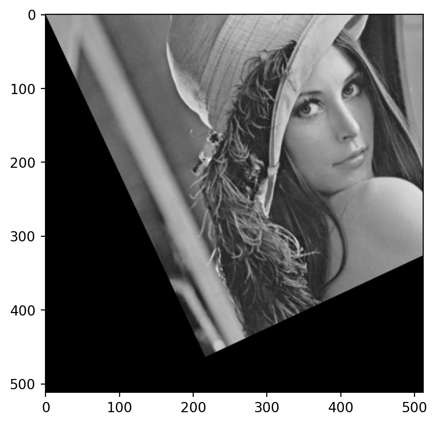
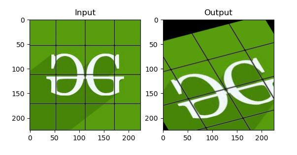
\[\begin{bmatrix} x' \\ y' \end{bmatrix} = \begin{bmatrix} a_{11} & a_{12} \\ a_{21} & a_{22} \\ \end{bmatrix} \begin{bmatrix} x \\ y \end{bmatrix} + \begin{bmatrix} t_1 \\ t_2 \end{bmatrix} \] or \[\begin{bmatrix} x' \\ y' \\ 1 \end{bmatrix} = \begin{bmatrix} a_{11} & a_{12} & t_1\\ a_{21} & a_{22} & t_2\\ 0 & 0 & 1 \\ \end{bmatrix} \begin{bmatrix} x \\ y \\ 1 \end{bmatrix} \]
Translation: \(\begin{bmatrix} 0 \\ 0 \end{bmatrix}\) ends up at location \(\begin{bmatrix} t_1 \\ t_2 \end{bmatrix}\)
6 unknowns: you need 3 pairs of points to define a skew
# Define pairs of points
# point = (x, y) ; [511, 0] = top right
points_src = np.float32([[0,0], [511, 0], [0, 511]])
points_dst = np.float32([[0,0], [300, 100], [200, 511]])
affine_mat = cv2.getAffineTransform(points_src, points_dst)
Iaff = cv2.warpAffine(I, affine_mat, I.shape[1::-1], flags=cv2.INTER_LINEAR)
print(f"Affine transformation matrix is {affine_mat}")
plt.imshow(Iaff)Affine transformation matrix is [[0.58708415 0.39138943 0. ]
[0.19569472 1. 0. ]]<matplotlib.image.AxesImage at 0x7fd84d30afd0>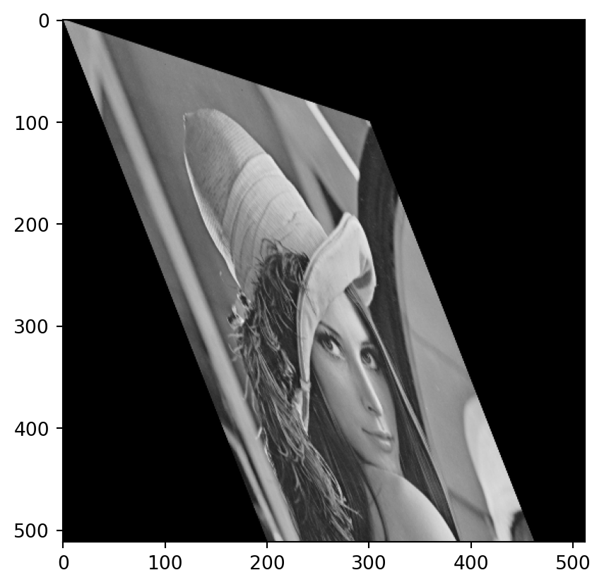
Example: https://theailearner.com/tag/cv2-getaffinetransform/
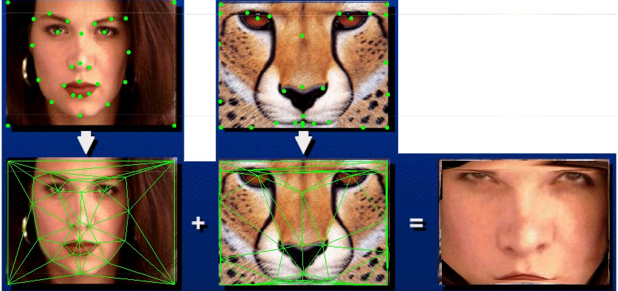
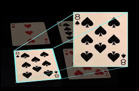
Step 1: \[\begin{bmatrix} x' \\ y' \\ w \end{bmatrix} = \begin{bmatrix} a_{11} & a_{12} & t_1\\ a_{21} & a_{22} & t_2\\ a_{31} & a_{32} & 1 \\ \end{bmatrix} \begin{bmatrix} x \\ y \\ 1 \end{bmatrix} \]
Step 2: divide by \(w\) \[ \begin{bmatrix} x' \\ y' \\ w \end{bmatrix} \rightarrow \begin{bmatrix} x'/w \\ y'/w \\ 1 \end{bmatrix} \]
# Define pairs of points
# point = (x, y) ; [511, 0] = top right
points_src = np.float32([[0,0], [511, 0], [0, 511], [511, 511]])
points_dst = np.float32([[200,50], [300, 50], [50, 411], [461, 411]])
persp_mat = cv2.getPerspectiveTransform(points_src, points_dst, cv2.DECOMP_LU)
Ipersp = cv2.warpPerspective(I, persp_mat, I.shape[1::-1], flags=cv2.INTER_LINEAR)
print(f"Perspective transformation matrix is {persp_mat}")
plt.imshow(Ipersp)Perspective transformation matrix is [[ 1.95694716e-01 -3.67582289e-01 2.00000000e+02]
[ 0.00000000e+00 9.78473581e-02 5.00000000e+01]
[-0.00000000e+00 -1.48080430e-03 1.00000000e+00]]<matplotlib.image.AxesImage at 0x7fd84d27b250>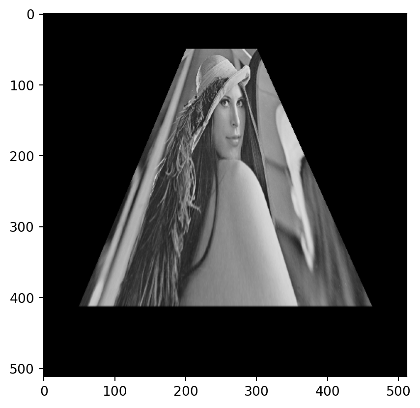
See here: https://theailearner.com/tag/cv2-getperspectivetransform/
How do these function work?
Find the inverse transformation \(T^{-1}(\cdot)\) \[ \begin{bmatrix} x' \\ y' \end{bmatrix} \rightarrow \begin{bmatrix} x \\ y \end{bmatrix} \]
For each destination location \(\begin{bmatrix} x' \\ y' \end{bmatrix}\):
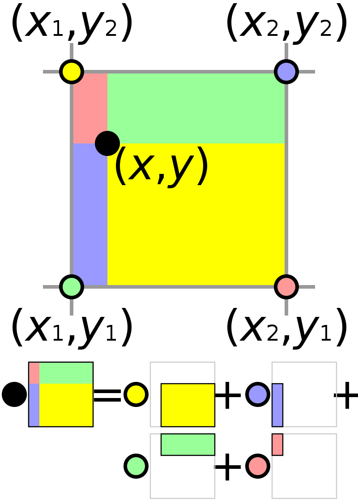
Interpolate the value based on the 4 neighbors
Source: Wikipedia
Image from: https://learnopencv.com/warp-one-triangle-to-another-using-opencv-c-python/↩︎
Image from: https://learnopencv.com/warp-one-triangle-to-another-using-opencv-c-python/↩︎
Image from: https://mikamustonen.com/2019-06-22-how-to-rotate-an-image-with-opencv.html↩︎
Image from https://www.geeksforgeeks.org/python-opencv-affine-transformation/↩︎
Image from https://answers.opencv.org/question/181902/warpperspective-advice-with-correct-bbox-pixels/↩︎
Image copyright: By Cmglee - Own work, CC BY-SA 3.0, https://commons.wikimedia.org/w/index.php?curid=21409164↩︎